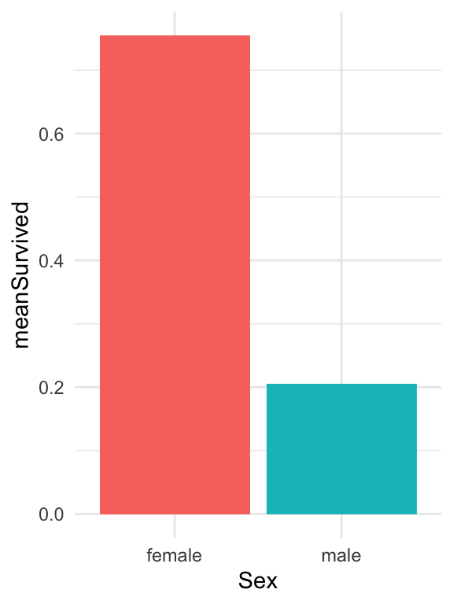
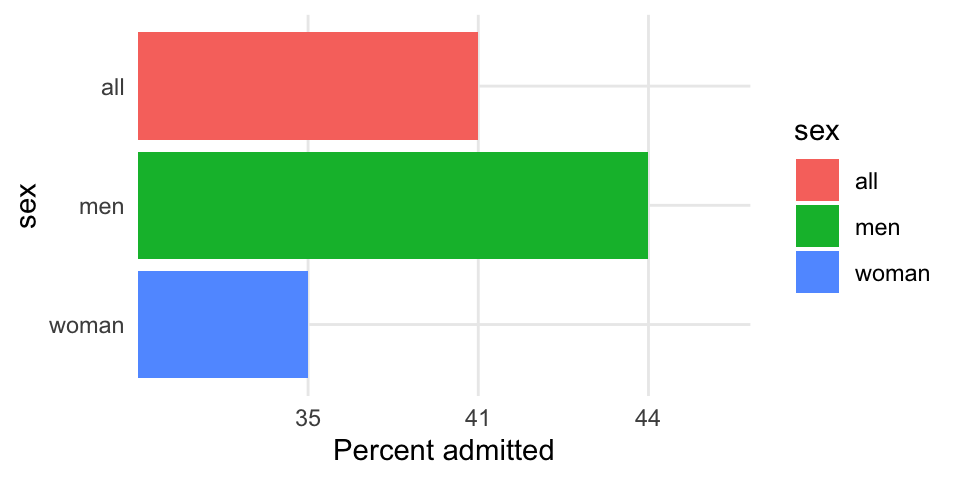
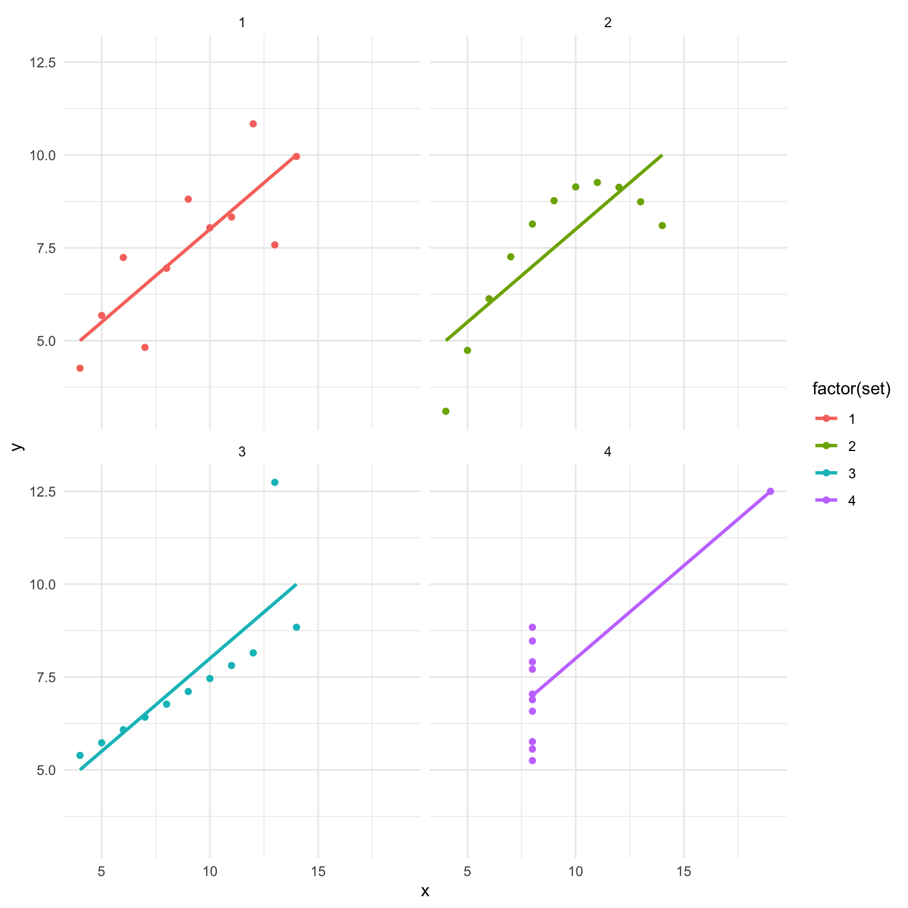
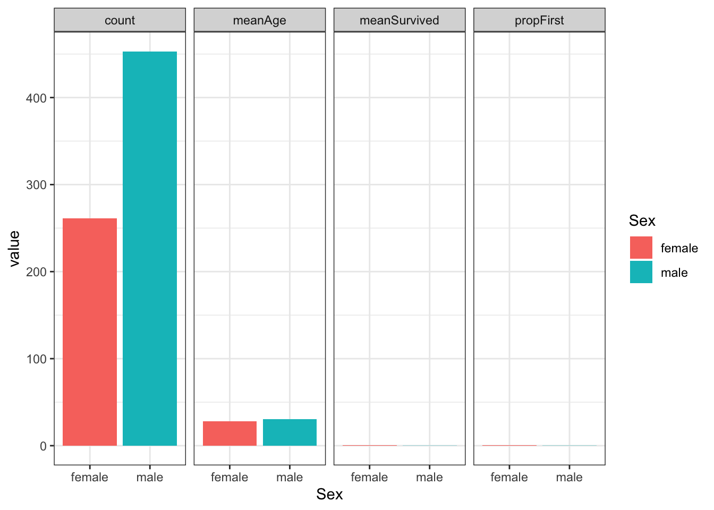
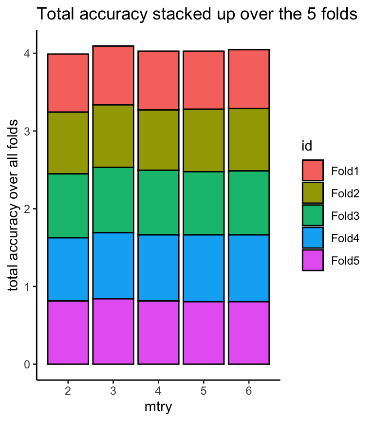

Chapter 3 Visualisering - ggplot2 dag 1

3.1 Inledning og videoer
3.1.1 Læringsmålene for dag 1
I skal være i stand til at:
- Forstå hvad “Grammar of Graphics” betyder og sammenhængen med den ggplot2-pakke
- Lære at bruge funktioner i ggplot2 og den relevante geoms (
geom_point(),geom_bar()ellergeom_boxplot()) - Lave en færdig figur med en titel, og korrekte akse labeller
- Arbejde lidt med farver
3.1.2 Hvad er ggplot2?
ggplot2, er en alternativ måde at lave plot på i R. Man kan godt blive ved med at lave simple plotter i base-pakken, men det kan være, at man løber hurtigt ind i problemer når man prøver at lave noget mere kompleks. Som vi kommer til at se i dette kapitel, er ggplot2 en god løsning til at bygge de forskellige komponenter af et plot op på. Det kan godt virker uoverskueligt i først omgang, men er faktisk en meget intuitiv måde at lave plotter på, når man er vant til det.
3.1.3 Video ressourcer
Link her hvis det ikke virker nedenunder: https://player.vimeo.com/video/544299069
Jeg har optaget tre videoer hvor jeg viser nogle ‘quick-start’ type eksempler indenfor min RStudio. Alle koden i videoerne er i kursusnotaterne, og jeg anbefaler at bruge kursusnotaterne som en reference i kurset når man arbejder på problemstillingerne osv.
- I video 1 demonstrerer jeg, hvordan man lave sit første plot med
ggplot2.
Link her hvis det ikke virker nedenunder: https://player.vimeo.com/video/543945046
- I video 2 dækker vi boxplots.
Link her hvis det ikke virker nedenunder: https://player.vimeo.com/video/543989990
OBS: jeg sagde i videoen at alpha=0.5 gøre punkterne mere markant, men jeg mente selvfølgelige mindre markant ;)
- I video 3 demonstrerer jeg barplots.
Link her hvis det ikke virker nedenunder: https://player.vimeo.com/video/544033975
3.2 Transition fra base R til ggplot2
Vi introducerer ggplot2 med et datasæt som hedder iris. Det er et meget berømt datasæt, og det er næsten sikkert, at I støder ind i det mange gange, enten på nettet eller i forbindelse med andre kurser som handler om R. Datasættet var oprindeligt samlet af statistikker og biologer Ronald Fisher i 1936 og indeholder 50 stikprøver for hver af tre arte af Iris plante, som dækker forskellige målinger (Iris setosa, Iris virginica og Iris Versicolor).

data(iris)Først skal vi have et overblik over datasættet. Til at gøre dette bruger vi summary():
summary(iris)## Sepal.Length Sepal.Width Petal.Length Petal.Width
## Min. :4.300 Min. :2.000 Min. :1.000 Min. :0.100
## 1st Qu.:5.100 1st Qu.:2.800 1st Qu.:1.600 1st Qu.:0.300
## Median :5.800 Median :3.000 Median :4.350 Median :1.300
## Mean :5.843 Mean :3.057 Mean :3.758 Mean :1.199
## 3rd Qu.:6.400 3rd Qu.:3.300 3rd Qu.:5.100 3rd Qu.:1.800
## Max. :7.900 Max. :4.400 Max. :6.900 Max. :2.500
## Species
## setosa :50
## versicolor:50
## virginica :50
##
##
## Vi vil gerne lave et plot, som viser sammenhængen mellem længden og bredden af sepal, eller mere specifik er vi interesseret i kolonnerne iris$Sepal.Length og iris$Sepal.Width.
Lad os starte med at visualisere data i base-R, ved at bruge plot:
plot(iris$Sepal.Length, iris$Sepal.Width)
Man kan gøre det meget pænere med at fk. bruge forskellige farver til at betegne de forskellige arter, eller giver en hensigtsmæssig overskrift eller akses navne.
3.3 Vores første ggplot
Vi vil dog fokuserer på et lignende plot som kan vi lave med ggplot2. Hvis man ikke har allerede gjort det, huske at indlæse pakken i R for at få kode til at virke.
#install.packages("ggplot2") #hvis ikke allerede installeret
library(ggplot2)Vi kan bruge ggplot2 til at lave et plot, som ligner den vi lavet i baseplot. Til at lave et plot med ggplot2 bruger vi altid funktionen ggplot().
Først specificerer vi vores data - altså at vi gerne vil bruge datarammen iris. Næste angiver vi, i en funktion, der hedder aes() (som sidder indenfor ggplot()), at x-aksen skal være Sepal.Length og y-aksen Sepal.Width. Det ser sådan ud:
ggplot(iris, aes(x=Sepal.Length, y=Sepal.Width))
Det er fint, men helt blank og derfor ikke særligt brugbart. Men det er lavet et grundlag her for vores plot (se akse navne osv).
Det er blank fordi vi endnu ikke har fortalt, hvilket plot type det skal være - for eksempel bar, histogram, punkter. Her vil vi gerne bruge punkter (scatter plot), som kaldes for (geom_point) i ggplot2. Vi forbinder derfor funktionen geom_point() til den ggplot() funktion, vi allerede har lavet. Huske altid, at man bruger + til at forbinde de to komponenter (altså ggplot() og geom_point()) af plottet (ellers få vi et blank plot).
Kodet for et meget simpelt punkt plot er derfor:
ggplot(iris, aes(x=Sepal.Length, y=Sepal.Width)) +
geom_point()
Bemærke, at vi ikke har skrev noget som helst indene de runde parenteser i funktionen geom_point(). Det betyder, at vi accepterer alle standard eller ‘default’ parametre, som funktionen tager. Hvis vi vil have noget andet end de standard parametre, kan vi godt specificere det. For eksempel, kan vi gøre punkterne lidt større end ved standard (prøve tjekke ?geom_point for at se en list overfor de mulige parametre, man kan ændre på):
ggplot(iris, aes(x=Sepal.Length, y=Sepal.Width)) +
geom_point(size=3)
Vi nu har et plot, som vi kan sammenligne med den ovenstående plot, vi lavet i base-pakken. Ligesom i base-pakken, vil vi gerne ændre noget ting for at gøre vores plot til vores færdige figur, som vi måske kan præsenterer overfor andre. Her i ggplot2 gøres det ved at tilføje flere komponenter ovenpå, med brugen af +, ligesom vi gjorde da vi tilføjede geom_point() til ggplot(). Det vil vi sikkert komme til at uddybe, men første vil jeg gerne skrive nogle orde om ggplot2 generelt, og filosofien bag.
3.4 Lidt om ggplot2
3.4.1 Syntax
Som vi har lige set, ggplot() tager altid udgangspunkt i en dataramme, som vi specificerer først.
I ggplot() indeholder den dataramme, vi specificerer, alle de data vi skal bruge til at få lavet vores færdige figur. Til at gøre det til noget mere konkret, lad os sammenligne kodet mellem base-pakken og ggplot() til vores iris data. Her kan man bemærke, at i base-pakken specificerede vi direkte vektorer iris$Sepal.Length og iris$Sepal.Width som parametre x og y, der tager henholdsvis første og andens-plads i funktionen. Til gengæld i ggplot(), specificerer vi først den hele dataramme i første plads, og så bagefter med brugen af aes() angav vi hvordan x-aksen og y-aksen ser ud.
#baseplot solution
plot(iris$Sepal.Length, iris$Sepal.Width)
#ggplot2 solution
ggplot(iris, aes(x=Sepal.Length, y=Sepal.Width)) +
geom_point()En anden fordel af ggplot2() er, at man kan blive ved med at forbedre plottet ved at tilføje ting ovenpå det plot, som vi allerede har lavet, i hvad man kan beskriver som en lagring tilgang. Det gøres intuitiv ved brugen af “+.” Man kan derfor starte med noget simpelt, og derefter opbygge det til noget mere kompleks.
Efter vi har angivet vores dataramme, angiver vi indenfor funktionen aes(), hvilke variabler i datarammen, vi gerne vil visualisere. aes() betyder ‘aesthetics’ og det er her at vi fortæller ggplot2 om de variabler der skal være i plottet - for eksempel her kan man specificere hvilken variable skal være på x-aksen og hvilken skal være på y-aksen.
Hvis vi eksempelvis har en dataramme med en variabel1 og variabel2, kan specifikationen se ud som følger:
#not run, bare for at vise hvordan man bruger ggplot:
ggplot(dataramme, aes(x=variabel1, y=variabel2)) Her har vi således angivet, at vi er interesseret i variabel1 på x-aksen og variabel2 på y-aksen, samt at de er kolonner af en dataramme som hedder dataramme.
Næste kan kan vi tilføje hvilket plot type, vi ønsker at lave (i dette tilfælde et scatterplot), og forbinder med + tegn:
#not run, bare for at vise hvordan man bruger ggplot:
ggplot(dataramme, aes(x=variabel1, y=variabel2)) +
geom_point()3.4.2 Hvad betyder egentlig grammar of graphics?
Den gg i ggplot2 står for grammar of graphics, og filosofien er at der skal defineres en sætningsstruktur til de figurer, man laver. Med andre ord består vores figur af forskellige komponenter, lag for lage, som man forbinder med “+.”

Bare for at vise de forskellige komponenter til at bygge op en plot:
- Data: Datarammer tager altid udgangspunkt
- Aesthetics: Variabler til x-aksen eller y-aksen, farve, form eller størrelse
- Scale: Scalere værdier eller representere flere værdier
- Geometries: Eller
geoms- hvad type plot skal vi lave - fk. bars, points, lines osv. - Statistics: Tilføj fk. mean, median, quartile som beskrive data
- Facets: Lave subplots baserende på flere dimensioner
- Coordinate system: Transformerer akser, ændrer afstanden for de viste data
I resten af uge, arbejder med at opbygge vores plots med ggplot2. Jeg præsenterer de ting som jeg mener er vigtige, men der er meget mere til ggplot end hvad er blevet dækket her. Der er skrev rigtig mange ting på nettet om ggplot2 og Google er derfor en fantastisk ressource - i mange tilfælde vil man kunne hurtigt finde kode eller løsninger til det, I gerne vil lave.
3.5 Specificere axse tekst og titel
Vi tager udgangspunkt i plottet, vi lavet ovenstående og prøve at gøre det bedre, ved at tilføje akse-labeler.
I ggplot kan man tilføje y-akse og x-akse tekst ved at bruge henholdsvis ylab og xlab.
ggplot(iris, aes(x=Sepal.Length, y=Sepal.Width)) +
geom_point(size=3) +
ylab("Sepal Length") +
xlab("Sepal Width")
Vi tilføjer en titel med at bruge af ggtitle():
ggplot(iris, aes(x=Sepal.Length, y=Sepal.Width)) +
geom_point(size=3) +
ylab("Sepal Length") +
xlab("Sepal Width") +
ggtitle("Scatter plot of Sepal Width vs Sepal Length") ## Tilføje Farver
## Tilføje Farver
I ggplot2 kan man automatisk specificere farver for de tre forskellige Species i de iris datasæt. Senere ser vi hvordan man kan være lidt mere fleksibelt og sætter farver manuelt, men for nu kan ve bare fortælle ggplot, at vi gerne vil skelne imellem de niveauer af variablen Species.
Vi gøre det ved at bruge color=Species indenfor aes(), ligesom i følgende. Bemark, at der kommer en ‘legend’ der fortæller os, hvilken art få hvilken farve.
ggplot(iris, aes(x=Sepal.Length, y=Sepal.Width,color=Species)) +
geom_point(size=3) +
ylab("Sepal Length") +
xlab("Sepal Width") +
ggtitle("Scatter plot of Sepal Width vs Sepal Length")
3.6 Ændre temaet
Det standard tema har en grå baggrund og grid linjer, men vi kan godt vælge noget andet. For eksempel kan man tilføje theme_minimal() som i nedenstående. Her får vi en hvid baggrund i stedet for, mens vi får stadig grid linjer. Man kan prøve forskellige temaer (for eksempel theme_classic(), theme_bw()), og se, hvilket tema fungerer bedst i det enkelt plot.
ggplot(iris, aes(x=Sepal.Length, y=Sepal.Width,color=Species)) +
geom_point(size=3) +
ylab("Sepal Length") +
xlab("Sepal Width") +
ggtitle("Scatter plot of Sepal Width vs Sepal Length") +
theme_minimal()
3.7 Boxplots og barplots
Indtil videre har vi kun arbejdet med geom_point(), men det kan være at vi gerne vil lave noget andet. Her gennemgår jeg geom_bar (bar plot) og geom_box (boxplot), og i morgen kigger vi på geom_hist (histogram) og geom_density (density plot).
For at lave disse plot typer, skal man tilføje funktionen til den ggplot() kommando, ligesom vi gjode med geom_point(). Der er dog nogle plot-type specifikke overvejelser som kan være nyttige at vide, indenfor man selv prøver dem.
3.7.1 Boxplot (geom_box)
https://en.wikipedia.org/wiki/Box_plot
For at lave et boxplot og Sepal.Length opdelte efter Species, angiver vi Species på x-aksen og Sepal.Length på y-aksen. Vi vil også have, at hver art få sin egen farve, så bruger vi fill=Species.
ggplot(data=iris, aes(x=Species, y=Sepal.Length,fill=Species)) +
geom_boxplot() +
ylab("Sepal Length") +
ggtitle("Boxplot") +
theme_minimal()
3.7.2 Boxplot: lave punkter ovenpå
Det kan ofte være nyttigt at plotte de egentlige data punkter ovenpå boxplottet, så I kan se både fordelingen i de data samt de rå data.
En løsning er at benytte geom_point() ved at tilføje det som komponent over vores eksisterende kode.
ggplot(data=iris, aes(x=Species, y=Sepal.Length,fill=Species)) +
geom_boxplot() +
geom_point() +
ylab("Sepal Length") +
ggtitle("Boxplot with points overlayed") +
theme_minimal()
Man kan dog se, at det ikke er særlig informativ, da alle punkter er på den samme lodrette linje. Hvis vi har mange punkter med samme eller næsten samme værdier, så kan vi ikke se de fleste af dem i plottet. En bedre løsning er at indføre noget tilfældighed i punkterne langt x-aksen, så at man mere tydelige kan se dem. Det er kaldes for “jitter” og man specificerer jitter ved at bruge geom_jitter i stedet for geom_point.
ggplot(data=iris, aes(x=Species, y=Sepal.Length,fill=Species)) +
geom_boxplot() +
geom_jitter() +
ylab("Sepal Length") +
ggtitle("Boxplot with jitter") +
theme_minimal()
Jeg kan vi også specificere alpha, som indføre gøre punkterne gennemsigtige, for at gøre dem mindre markant. Man kan også ændre på width som kontrollerer deres spredning langt x-axsen.
ggplot(data=iris, aes(x=Species, y=Sepal.Length,fill=Species)) +
geom_boxplot() +
geom_jitter(alpha=0.5,width=0.2) +
ylab("Sepal Length") +
ggtitle("Boxplot with jitter and transparency") +
theme_minimal()
3.7.3 Fjerne legend hvis unødvendige
Man kan se, at når man specificerer farver, få man en legend på højre side af plotte. I dette tilfælde er det faktisk ikke nødvendige, da man kan se uden legend hvad de tre boxplots refererer til. Defor fjerner vi den fra plottet ved at bruge theme(legend.position="none").
ggplot(data=iris, aes(x=Species, y=Sepal.Length,fill=Species)) +
geom_boxplot() +
geom_jitter() +
ylab("Sepal Length") +
ggtitle("Boxplot with jitter and no legend") +
theme(legend.position="none")
3.7.4 Barplot (geom_bar)
https://en.wikipedia.org/wiki/Bar_chart
Med ggplot() kan man representere data i et bar plot ved at bruge geom_bar(). I følgende vil vi gerne tælle op de antal observationer for hver art (variable Species), og visualerer dem således som søjler (eller bare “bars”) Indenfor geom_bar() specificerer vi således stat="count", som er den meste almindelige brugt mulighed.
Vi bruger også fill=Species her for at lave forskellige farver automatiske for hver af de tre arte. Bemærk, at det var color=Species i forudgående plotte når vi anvendte geom_point(). Det er fordi, color bruges for punkter og linjer, mens fill er til større regioner som skal være udfyldt, såsom bars og histograms.
ggplot(iris, aes(x=Species,fill=Species)) +
geom_bar(stat = "count") +
ggtitle("Number of observations by species")
3.7.5 Barplot: stack vs dodge
Hvis man har flere gruppe variabler (altså Species og måse en anden), kan man lave bar plotte på forskellige måder. Da vi ikke har en ekstra gruppe variabel, jeg laver én, der hedder Sepal.Group, der skelne imellem Long og Short værdier af variablen Sepal.Length. Her specificerer jeg bare (med funktionen ifelse()), at hvis Sepal.Length er længere end den gennemsnitlige Sepal.Length, så er det Long, ellers er det Short.
Hvis jeg lave en barplot med de to variabler, kan jeg tilføje Sepal.Group som fill, og ggplot splitter de antal observationer efter Sepal.Group med farver som repræsenterer Sepal.Group og tilføjer en tilsvarende legend.
iris$Sepal.Group <- ifelse(iris$Sepal.Length>mean(iris$Sepal.Length),"Long","Short")
ggplot(iris,aes(x=Species,fill=Sepal.Group)) +
geom_bar(stat="count") +
theme_minimal()
Mange gange vil vi heller få bars som stå ved siden af hinanden. Det kan vi specificere med blot at tilføje position="dodge" ind i geom_bar().
ggplot(iris,aes(x=Species,fill=Sepal.Group)) +
geom_bar(stat="count",position="dodge") +
theme_minimal()
3.8 Troubleshooting
Jeg har lavet en lille liste over nogle forskellige ting som kan skyldes en fejl. Jeg tilføjer også andre ting som opstå i vores lektion :).
ggplot(data=iris, aes(....)): huske herdata=iriser korrekt og ikkeData=iris(R skelne mellem store og små bogstaver). Man kan også undlade at brugedata=og skrive bareirisi stedet for.Stavning - dobbelt tjek, at du har stavet variable eller funktion navne korrekt.
Glemt
+symbol - for at forbinde komponenter i plottet, skal man huske at tilføje+i slutningen af en linje og så skrive de næste komponent bagefter (man behøver ikke at skrive hver komponent på en ny linje med det gøre det nemmere at læse koden).Glemt beslag: her har man glemt den sidste beslag: skal være
fill=Species))og ikkefill=Species). Man får bare en+fordi R forventer at du fortsætter med at skrive mere kode.
> ggplot(data=iris, aes(x=Sepal.Length, fill=Species)
+ fillogcolour- indenforaes()referererfilltil at man fylder fk. bars eller regioner med farver, ogcolourreferere til farven af linjer eller punkter.
3.9 Problemstillinger
1) Quiz på Absalon - det hedder Quiz - ggplot2 part 1.
Lave et nyt R Markdown dokument og fjerne den eksempel kode. Huske at oprette en ny chunk ved at trykke på “Insert” new chunk", eller bruge den shortcut CMD+ALT+I eller CTRL+ALT+I. Jeg anbefaler, at I oprette en ny chunk for hver plot, I laver.
Vi øver også med at lave de tre plot typer, med labeller og titler. Vi bruger datasættet der hedder diamonds. Huske at først indlæse de data:
data(diamonds)Her er beskrivelsen af diamonds:
Prices of over 50,000 round cut diamonds: a dataset containing the prices and other attributes of almost 54,000 diamonds.
Se også ?diamonds for en beskrivelse af de variabler.
2) Bruge datasættet diamonds til at lave et scatter plot (geom_point()):
caretpå x-aksenpricepå y-aksen
Så at I har noget at sammenligne med, skal det se sådan ud:

3) Tilføj nogle komponenter til dit plot fra 2).
- En x-akse label (
xlab()) og en y-akse label (ylab()) - En titel (
ggtitle()) - Et tema som hedder
theme_bw() - Huske at forbinde komponenterne med
+og skrive de nye komponenter på deres egen linje.
Det skal se sådan ud:

4) Ændre temaet til theme_classic() eller theme_minimal() i stedet for theme_bw() og kig på resultatet.
Ekstra: Hvis man (måske ved uheld) skriver ind to temaer på samme tid (for eksempel + theme_bw() + theme_classic()) - hvilke tema får man så i plotten?
Valgfri ekstra: her er nogle flere tema man kan prøve: https://ggplot2.tidyverse.org/reference/ggtheme.html
5) Lave det samme plot som i 4), med color=color indenfor aes(). Den første color refererer til punkt farver og den anden til en variable i datarammen der hedder color.
Det skal se sådan ud:

6) Bruge stadig diamonds, til at lave et boxplot:
cutpå x-aksen (giv x-aksen labelCut)pricepå y-aksen (giv y-aksen labelPrice of diamond)- bruge
filltil at give forskellige farver til de mulige værdier afcut. - bruge temaet
theme_bw()
Det skal se sådan ud:

Ekstra: hvordan ser det ud, hvis man bruger color i stedet for fill?
7) Lav følgende ekstra ændringer til din boxplot fra ovenstående:
- Tilføj
geom_jitter()til din boxplot - fjern de legend (se notaterne).
Det skal se sådan ud:

Ekstra 1: man kan også prøve at forbedre plottet ved at give nogle indstillinger ind i geom_jitter(), for eksempel kan man prøve geom_jitter(size=.2,color="grey",alpha=0.5) for at gøre punkter mindre overbelastende i plottet (eller kan man bare fjerne dem).
Leg med de tre indstilling size,color og alpha og ser på forskellen. Her er en note om alpha:
Alpha refers to the opacity of a geom. Values of alpha range from 0 to 1, with lower values corresponding to more transparent colors. https://ggplot2.tidyverse.org/reference/aes_colour_fill_alpha.html
Ekstra 2: Prøve også at skifte rækkefølgerne af geom_jitter() og geom_boxplot() i den plot kode og se - gøre det en forskel til hvordan plottet ser ud?
8)
Lave en bar plot med stat="count":
- Variable
claritypå x-aksen - Forskellige farver til den gruppe-variable
cut - Specificerer
position="dodge"for at få bars ved siden af hinanden - Tilføje et tema

9) Bare ekstra øvelse: Lege frit med at lave andre plots fra diamonds med ggplot2. Eksempelvis
- Boxplots med
caratopdelte efterclarity - Barplots for de forskellige farver (variable
color) - Et scatter plot af
depthvsprice.
I alle tilfælde tilføje akse-labs, en titel, et tema osv.
3.10 Næste gang
Efter at have lavet de problemstillinger skal man kunne se, at der er rigtig meget fleksibilitet involveret med at lave et plot med ggplot2. I morgen går vi videre med andre plot typer, og hvordan man fk. sætte farver manuelt.